BW Maker 사용법
채색 PSD에서 라인 레이어만 골라 내보내는 도구입니다. 이 문서의 그림은 모두 예시 파일로 찍은 것입니다.
이 앱이 하는 일
채색이 끝난 PSD에는 선화·색·그림자가 수십에서 수백 장 섞여 있습니다. 이 앱은 그중 선화만 골라내어 별도의 PSD(또는 PNG·JPG)로 내보냅니다. 고르는 규칙을 프리셋으로 저장해 두면, 다음 파일부터는 클릭 한 번으로 같은 규칙이 적용됩니다.
선화가 없는 자리 — 예를 들어 머리카락과 얼굴이 색만 다르고 선이 없는 경계 — 에는 색 경계선을 자동으로 그려 넣을 수 있습니다.
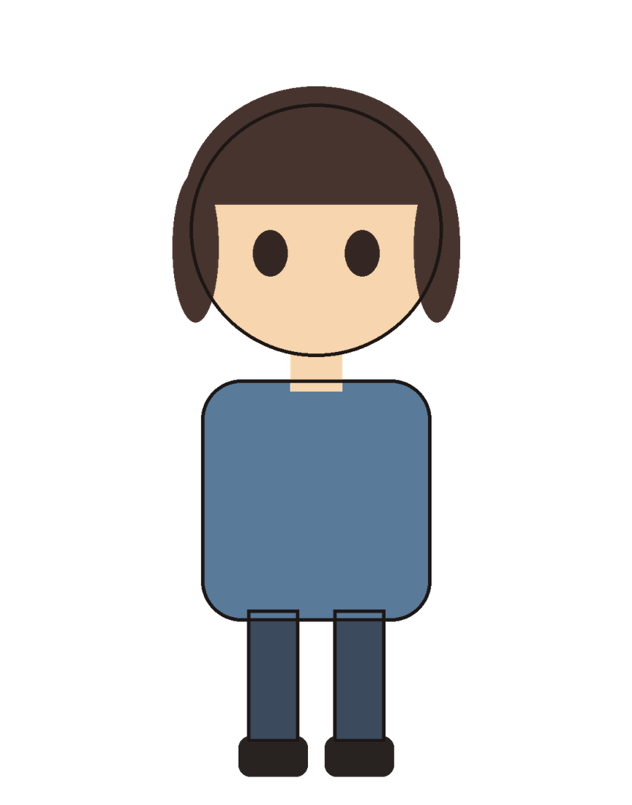
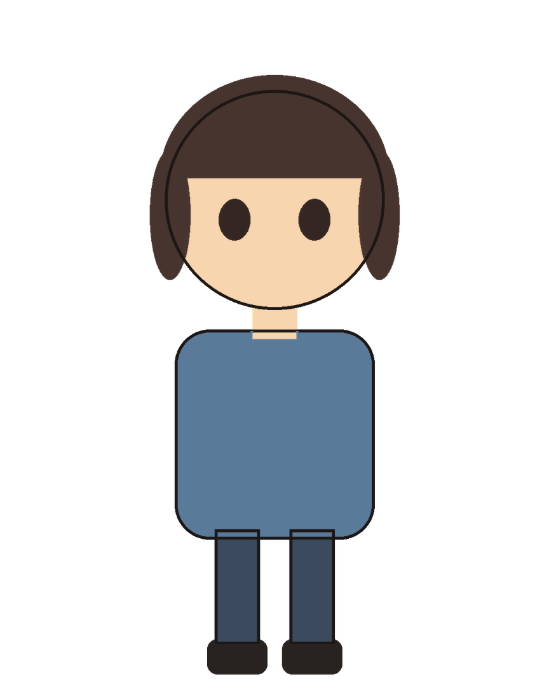
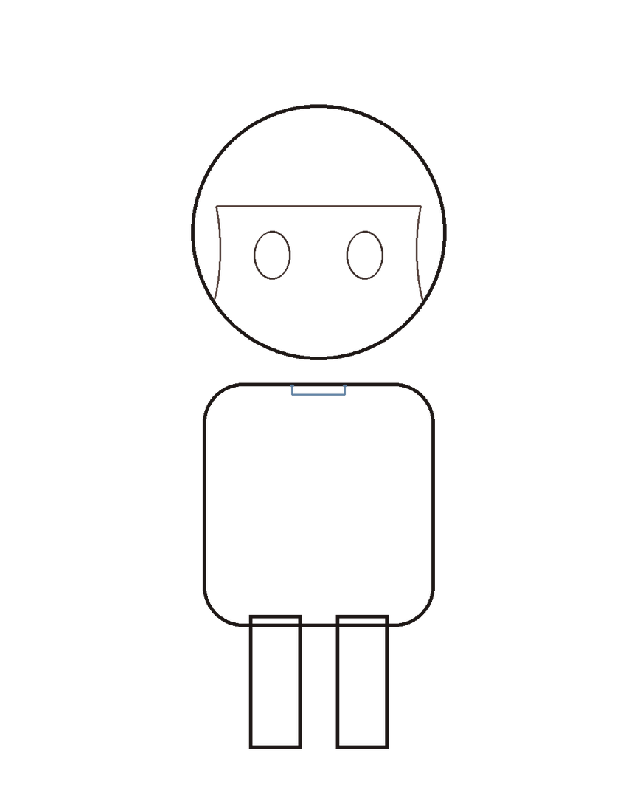
②에서 생긴 선은 채색 위에서는 옅게 보입니다. 선화만 확대한 비교에서 분명히 확인할 수 있습니다.
빠른 시작
- 위쪽 프리셋에서 작업에 맞는 것을 고릅니다 — 캐릭터는
CHAR, 배경은BG, 소품은PROP. - 왼쪽 + 추가(파일) 또는 + 폴더(폴더 통째로)로 PSD를 넣습니다.
- 파일을 클릭하고 적용을 누릅니다.
- 미리보기를 확인하고 내보내기...를 누릅니다.
1. 파일 열기
+ 추가는 파일을 골라서, + 폴더는 폴더 안의 PSD를 하위 폴더까지 모두 넣습니다. 창으로 끌어다 놓아도 됩니다.
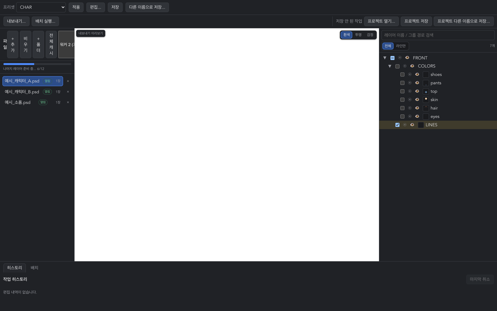
파일 이름 옆의 열림 배지는 그 파일을 읽어 레이어 구조까지 파악했다는 뜻입니다. 오른쪽 레이어 트리에 그 파일의 레이어가 나타납니다.
2. 프리셋 적용
프리셋은 어떤 레이어를 라인으로 볼지에 대한 규칙 묶음입니다. 고른 뒤 적용을 누르면 규칙에 맞는 레이어가 체크되고, 미리보기가 내보낼 그림으로 바뀝니다.
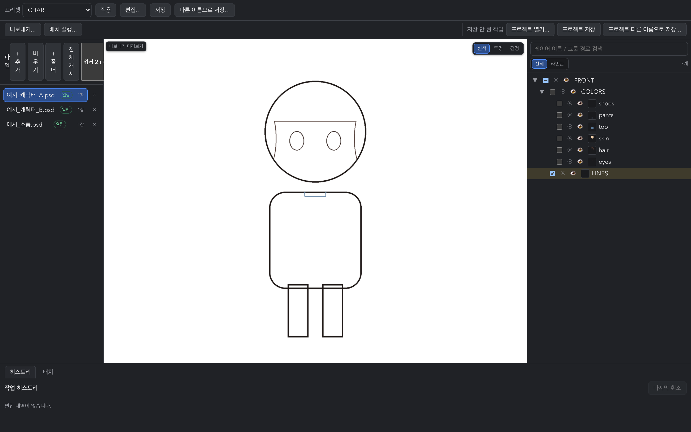
| 프리셋 | 쓰는 곳 | 색 경계선 |
|---|---|---|
CHAR | 캐릭터 판 | 켜짐 |
BG | 배경 판 | 꺼짐 |
PROP | 소품 판 | 켜짐 (광택·그라데이션에 맞춘 설정) |
규칙을 바꾸려면 편집...을 누릅니다. 고친 내용은 저장으로 덮어쓰거나 다른 이름으로 저장...으로 새 프리셋이 됩니다.
3. 레이어 확인
오른쪽 트리에서 전체와 라인만 탭을 오갈 수 있습니다. 라인만은 내보낼 레이어만 남겨 보여줍니다 — 최종 확인에 쓰는 화면입니다.
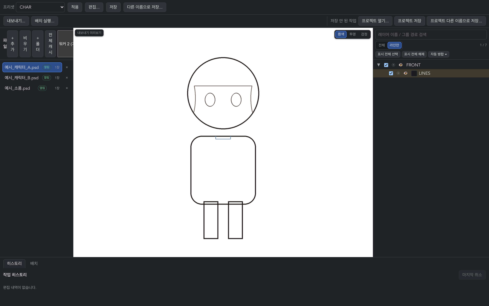
- 체크박스 — 내보낼지 여부
- 눈 아이콘 — 미리보기에 보일지 여부 (내보내기와 무관)
- 프리셋이 못 잡은 레이어는 우클릭해 라인으로 지정할 수 있습니다.
4. 내보내기
내보내기...를 누르면 저장 위치와 형식을 정합니다.
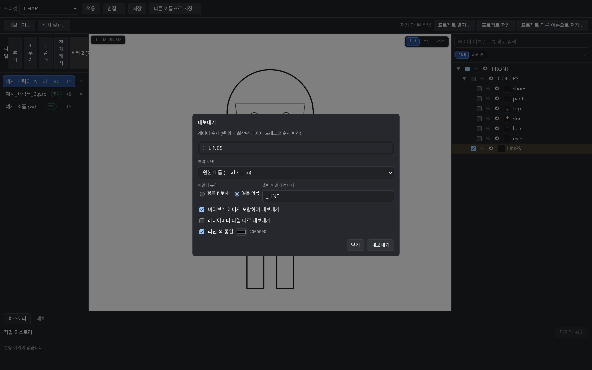
- 형식 — PSD / PNG / JPG
- 레이어별로 분리 — 레이어마다 파일 하나씩
- 색 통일 — 모든 라인을 지정한 한 가지 색으로
내보낸 뒤에는 결과를 자동으로 검증합니다. 캔버스 크기와 레이어 수, 픽셀이 의도와 맞는지 확인해 이상이 있으면 알려 줍니다.
배치 내보내기
목록에 있는 파일을 한 프리셋으로 전부 내보냅니다. 파일을 하나씩 열고 적용할 필요가 없습니다.
- 위쪽 배치 실행...을 누릅니다.
- 저장 폴더를 고릅니다.
- 아래 배치 탭에서 진행과 결과를 봅니다.
파일 하나가 실패해도 나머지는 계속 진행되고, 실패한 파일은 이유와 함께 목록에 남습니다.
프로젝트 파일
지금까지의 작업 — 파일 목록, 레이어 선택, 손으로 지정한 라인, 병합 — 을 .bwproj 파일 하나로 저장합니다. 프로젝트 저장으로 저장하고 프로젝트 열기...로 이어서 작업합니다.
준비와 캐시
PSD의 레이어를 화면에 그리려면 압축을 풀어야 합니다. 큰 채색 판은 레이어 하나에 몇 초가 걸리므로, 앱은 이 작업을 미리 해 두고 디스크에 저장합니다. 그래서 같은 파일을 두 번째 열 때는 훨씬 빠릅니다.
파일 하나를 열면
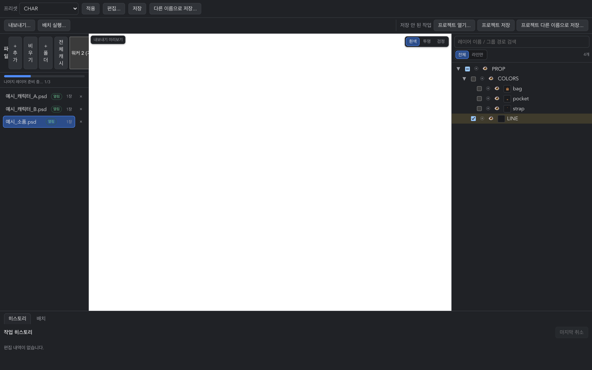
진행바가 두 단계로 나뉩니다.
| 표시 | 뜻 | 기다려야 하나 |
|---|---|---|
| 라인 준비 중 | 선화 레이어를 먼저 준비합니다 | 예 — 끝나면 라인 토글이 즉시 반응합니다 |
| 나머지 레이어 준비 중 | 색 레이어까지 캐시를 만듭니다 | 아니오 — 그냥 작업하셔도 됩니다 |
폴더를 통째로 열면
자동으로 준비되는 것은 지금 보는 파일과 그다음 파일 한 장뿐입니다. 나머지는 전체 캐시 버튼을 눌러야 합니다.
폴더 작업이라면 폴더를 연 직후 전체 캐시를 켜 두는 것이 가장 빠릅니다. 미리보기 준비와 같은 캐시를 쓰므로 함께 돌아도 문제없습니다.
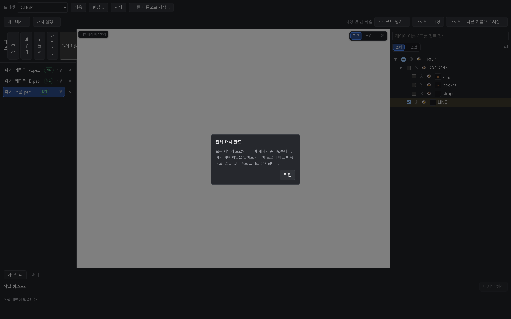
작업 프로세스 수
파일 패널의 드롭다운입니다. 준비·전체 캐시·배치 내보내기를 몇 개로 나눠서 할지 정합니다.
| 설정 | 폴더 100장 준비 | 비고 |
|---|---|---|
| 1 | 28.0분 | 나누지 않음 |
| 2 (기본) | 14.6분 | |
| 4 | 8.6분 | CPU·메모리를 그만큼 더 씁니다 |
코어와 메모리에 여유가 있으면 4를 권합니다. 다른 작업을 함께 한다면 2가 무난합니다.
색 경계선이란
채색 판에서 선이 없고 색만 다른 경계에 선을 그려 넣는 기능입니다. 머리카락과 얼굴, 옷과 피부처럼 아티스트가 색으로만 구분한 자리가 대상입니다.
내보낼 선화를 얼굴 부분만 확대해 비교하면 차이가 분명합니다.
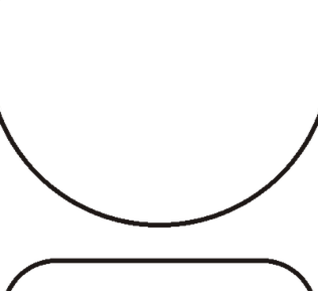
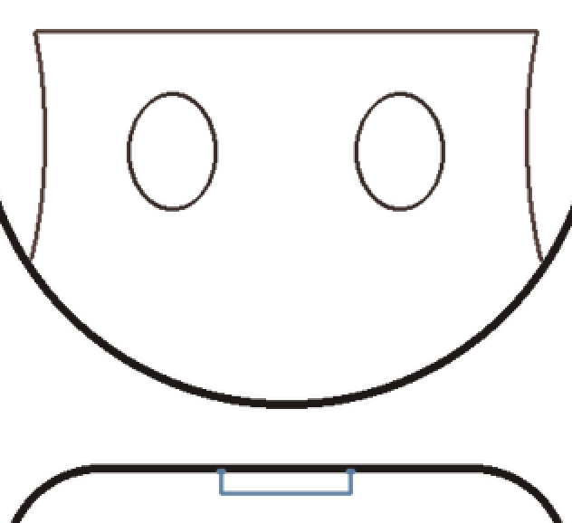
프리셋 편집...의 색 경계선 항목에서 켜고 끌 수 있고, 굵기·문턱값을 조절할 수 있습니다. 이미 선이 그려져 있는 자리에는 덧그리지 않습니다.
잘 안 될 때
"적용"을 눌렀는데 아무 레이어도 안 잡힙니다
프리셋의 이름 규칙이 그 파일과 안 맞는 경우입니다. 두 가지 방법이 있습니다.
- 레이어 트리에서 해당 레이어를 우클릭 → 라인으로 지정
- 파일 패널의 라인 필요 버튼 — 프리셋이 못 잡은 파일 전부에서 그림 레이어를 찾아 한 번에 지정합니다
미리보기가 비어 있습니다
프리셋이 그 파일에서 아무것도 못 잡았거나, 체크된 레이어가 없는 경우입니다. 레이어 트리에서 전체 탭을 눌러 무엇이 체크돼 있는지 확인하세요.
파일 전환이 느립니다
그 파일이 아직 준비되지 않았습니다. 전체 캐시를 한 번 돌려 두면 이후로는 빨라집니다.
내보낸 파일이 열리지 않습니다
내보내기 검증에서 이상이 잡혔다면 화면에 이유가 표시됩니다. 그 메시지와 함께 문의해 주세요.